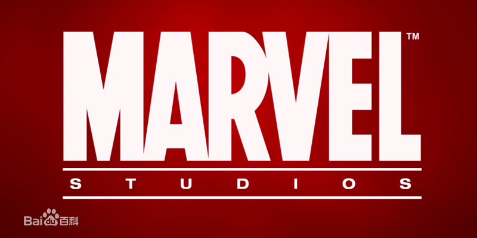
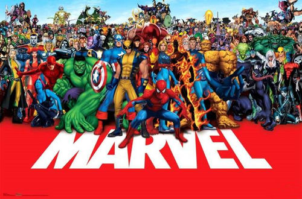
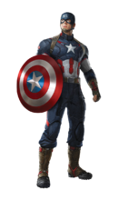
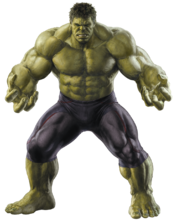
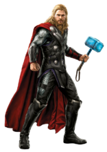
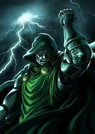
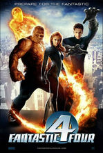
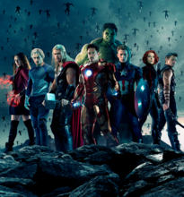
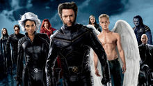

漫威漫画公司（Marvel Comics），旧译为“惊奇漫画”，曾用名“时代漫画”（Timely Comics）、亚特拉斯漫画（Atlas Comics），是美国与DC漫画公司（Detective Comics）齐名的漫画巨头。它创建于1939年，于1961年正式定名为Marvel，旗下拥有蜘蛛侠、钢铁侠、美国队长、雷神托尔、绿巨人、黑寡妇、金刚狼、超胆侠、蚁人、黑豹、奇异博士、恶灵骑士等超级英雄和复仇者联盟、神奇四侠、X战警、银河护卫队等超级英雄团队。 2009年底，华特迪士尼公司以42.4亿美元收购Marvel Entertainment Inc.，获得了绝大部分漫画角色的所有权。2010年9月，Marvel宣布其正式中文名称为“漫威”。
 历史沿革 著名英雄 反派 团体 影视改编Marvel公司的历史可以追溯到1939年。当时公司名 漫威 漫威 为时代漫画（Timely Comics）；1951年更名为亚特拉斯漫画（Atlas Comics），而在1961年正式更名为Marvel Comics，并确定了正式的标记： 在漫画封面的左上角，设置一个长方框，里面有着当期主角的形象，下面是“Marvel Comics Group”的字样。因为Marvel有“惊奇、奇迹”的意思，所以在中国一度被称为“惊奇漫画”，2010年9月Marvel将中文名称正式定为“漫威”。2011年4月29日，在第七届中国国际动漫产业博览会B馆漫威展区里，Marvel宣布其中文名“漫威”正式登陆中国。 漫威的创立者是出版商马丁·古德曼，古德曼早先致力于创办通俗杂志，题材涵盖西部故事、侦探、冒险和科幻等许多方面。到1938年，他决定寻找新的发展方向——新奇，华丽，还要有引人入胜的激烈场面——漫画正是这样的东西。尽管当时DC漫画公司已经抢得了先机，推出了两大王牌角色超人和蝙蝠侠，不过凭借新奇的点子和精彩的创意，漫威还是独辟蹊径，创造出了令人难忘的新角色......
美国队长：美国队长是创作于二战时代的老牌英雄，最著名的反法西斯斗士之一。他本是瘦弱的青年史蒂夫·罗杰斯，接受了超级士兵改造手术，成为唯一成功的实验品，身体各项素质达到人类极限。他没有真正的超能力，虽然使用着坚不可摧的特制盾牌，但他最大的武器当属勇气、毅力和爱国精神。二战结束前夕，为阻止德军的超级火箭发射，美国队长随着爆炸被抛到了冰冷的北海里，冰冻起来。直到1994年才被刚刚组建的复仇者联盟找到。苏醒的罗杰斯继续为了正义而战，但当代世界已经不像昔日一样善恶分明，他也不时被人们视为落后于时代的活化石。作为漫威少数近乎道德完人的英雄之一，美国队长以自己与现实竞争的特点赢得了读者的关注。
绿巨人：科学家布鲁斯·班纳受到自己开发的武器辐射，变异成巨大的绿色生物，具有无敌的力量，并以“越愤怒，越强壮”闻名。浩克代表了一种无视一切障碍、难以自控的野性，尤其是与循规蹈矩的文明人形成对比，因此他一直受到社会的敌视，与其他英雄的关系也时好时坏，但同时他仍然保持着锄强扶弱的英雄特质。浩克长期以来受到广泛的喜爱，人们在他身上寄托了自己反抗权威、发泄不满的感情。
雷神：来自现实中的北欧神话，漫威对其身份进行了一些现代性的设计，在保留神话色彩的同时把他连同全世界几十个古代神话体系引入了漫画时空。托尔是神界最强大，最有英雄气概的成员之一，是仙宫的守护者和继承人。但他后来逐渐变得傲慢自大，所以被父亲——众神之父奥丁被打入人间以学习谦逊，此后逐渐与人类为友，与各种恶势力抗争。他虽然是神，但不是全能的，也要面对形形色色的困境：与世俗规则的互不理解，与神族同胞的种种分歧，与宇宙更高势力的抗争……作为一个超凡而又漫步凡间的英雄，他将继续在漫威世界呼风唤雨。
钢铁侠：大军火商、亿万富豪、花花公子托尼·斯塔克，经历生死考验后决心把聪明才智用在造福人类上，为自己设计了一系列的高科技装甲，成为当时最受瞩目的英雄之一。托尼·斯塔克精明风趣、过着令书中人和读者都羡慕的潇洒生活，但他同时也面临着身体和精神上的巨大压力；虽然事业有成，遨游政、经、军界，却也历经多次重伤、破产、黑化、被控诉。他为世界和平和整个超级英雄事业做出过不可磨灭的贡献，又因为自信过甚而试图控制其他超人类，几乎身败名裂。他就是如此一个聪明、正直而又冲动、彷徨的商人，但其英雄本质仍然不会磨灭。
回到顶部
灭霸：整个漫威宇宙的大反派，实力强劲。是出生在土星卫星泰坦上的永恒一族。Thanos知晓永恒之族的所有超人的哲理，这给予了他无法超越的力量，持久力，恢复能力和敏捷度。他的皮肤近乎无法摧毁，尤其是在对抗冷/热/电/辐射/毒/衰老和疾病的时候。早在他被“死亡女神（Thanos暗恋的死亡女神）”“诅咒成为永生”之前他就可以不吃任何东西以及饮水而生存。Thanos的精神也是近乎无敌的，这使得他对于绝大多数精神攻击都能产生免疫能力，与此同时他可以聚涌出法力能量波或是通过双眼双手释放出等离子能或者宇宙能。

奥创：它是亨利·皮姆博士（蚁人）创造出来的智能机器人，后来奥创拥有自我意识后变坏，企图消灭地球上所有有机生命体，并成为复仇者主要劲敌之一。终极程序，拥有刀枪不入的身体和超强的愈合能力，能够根据对手的特点而自我更新程序并进化出克制对手的强大的能力，是超级智能机器人，包括UItron-1，UItron-2，UItron-3等等，也就是奥创一号，二号，三号等等许多代的机体。在电影《复仇者联盟2：奥创时代》中改编为钢铁侠创造设计。

毁灭博士：漫威反派在地球上的最早出场及地位最高者之一，是神奇四侠的宿敌，但与几乎所有主要英雄都作对过。此人出身虚构的欧洲小国，自身没有超能力，通过学习和机缘掌握了大量先进科技和魔法知识，属于地球最有智慧者之列；由于在实验中毁容，他戴上了金属面具，并开发出不亚于钢铁侠的铠甲。他夺取了故国权力，把它提升为世界强国，同时试图征服外部世界，多次与超级英雄们交手。毁灭博士以不惜一切代价追寻宇宙奥秘而闻名，染指过许多宇宙的伟力，多次强到逆天的地步，但最终仍然难免邪不胜正。
邪神洛基：北欧神王奥丁收养的儿子，实力强悍，不仅渴望权力，其征服的野心也相当强烈。一直嫉妒着兄长托尔，为此策划了利用绿巨人攻击他的阴谋，却反而促成了复仇者联盟的诞生，他也由此成为复仇者联盟中的第一大反派。后来，洛基在诺曼·奥斯本策划的《围城》事件的最后关头救助了托尔，自己牺牲了，转生成一个小男孩，邪恶的性格收敛了不少。2013年出现在了《少年复仇者V2》中，为少年复仇者的重聚做出了很大的贡献。离开少年复仇者后经历过了各种自我斗争后，成为了故事之神，在秘密战争中打败超越神族，拯救了世界。在电影《雷神2：黑暗世界》中洛基与哥哥托尔合作打败了黑暗精灵马勒基斯，给影迷们留下了很多好感。
 回到顶部
回到顶部
神奇四侠：漫威在60年代复兴时的开山之作，讲述四位科学家由于受到宇宙射线辐射而变异，获得四种不同超能力，从此成立一个团队，既打击犯罪，也进行科学探险，解决各种离奇的问题。这支队伍实际上是一个家庭，成员身份公开，广受世人欢迎。他们中间的一对恋人是主流英雄中最早结婚并有孩子的。神奇四侠以良好的形象开创了现代英雄兴旺的时期，其他的英雄，包括复仇者这样的队伍都视他们为前辈楷模。
复仇者联盟：由钢铁侠、雷神托尔、绿巨人、蚁人、黄蜂女发起的英雄团队，旨在以团结之力对抗单个英雄无法抵御的重大威胁。第六位加入的美国队长也获得创始成员资格，他与钢铁侠成为队伍最核心的领袖。复仇者是一支独立自主的队伍，受斯塔克等赞助者的资金支持，与神盾局等官方机构合作，处理美国、地球甚至宇宙的重大事件。复仇者有过近百名成员，有的几乎把自己的一生投入此事业，有的只是短暂地来帮忙。这个号称地球最强英雄的组合是漫威世界最正面、最受公众信任的队伍，但它也由于成员自身的种种问题经历了许多风雨。
X战警：漫威世界存在着变种人（Mutants）的概念，一种人类进化的分支，天生具有异于常人的特性，被认为可能是进化的下一个阶段，将来会取代人类，因此变种人受到大部分人类的敌视，生活在恐惧和排斥之中。不同的变种人选择不同的应对方式，万磁王、天启、地狱火俱乐部诸势力试图以暴力夺取世界统治权，同时相互之间也剑拔弩张；X教授发起的X战警则力争与人类和平共处，并阻止凶暴的变种人。X战警的故事堪称美漫中最庞大的体系之一，半个世纪以来包括主线支线在内已经出版了十几个系列的数千期漫画，人物数不胜数。其剧情引发了人们在种族相处、少数群体生存和人与人之间求同存异方面的思考，激起了热烈反响。 X战警中最著名的角色当属金刚狼（Wolverine），一个活了百余岁，外表粗豪，性格刚毅，经验丰富，既懂得团队配合又善当孤胆英雄的角色，长期以来他以神秘的身世、豪迈的性格和血腥的战斗经历吸引了无数读者，成为漫威个人出场率最高的人物之一。此外，两位领袖人物也很受关注：心灵感应大师X教授（Professor X）是大部分变种人英雄的导师，以其美好的梦想激励着他们为这个仇恨自己的世界而战，但他也必须时刻面对梦想与现实的碰撞、自身巨大力量带来的侵蚀，甚至昔日学生们独立后与他的矛盾；万磁王（Magneto）最初作为单纯的反派，但逐渐显露出理想主义的一面，其种种恶行也有值得同情之处。
 回到顶部20世纪DC漫画公司依靠超人和蝙蝠侠掀起电影热时，惊奇漫画 漫威影视 漫威影视 除了几套动画外却没有什么像样的影视改编作品。直到21世纪到来，斯坦·李认为，随着计算机图像技术的发展，在电影中忠实的表现超级英雄终于成为可能——漫画改编的时机总算成熟了。 惊奇漫画先后凭着《X战警》、《蜘蛛侠》横扫美国票房。但这两个大获成功的系列电影仅给作为品牌授权方的漫威带来不足1亿的票房分成。不想再为他人做嫁衣的漫威开始了自制超级英雄大片的道路，推出了漫威电影宇宙（Marvel Cinematic Universe）计划，自2008年起，依次将钢铁侠、绿巨人、雷神托尔、美国队长等超级英雄搬上大荧幕，随后通过《复仇者联盟》将他们集结起来——在第一阶段，漫威凭借6部影片，以总计10亿美元的成本换回了高达37.4亿美元的全球票房。第二阶段已经进入拍摄阶段，第三阶段也已进入筹划阶段。